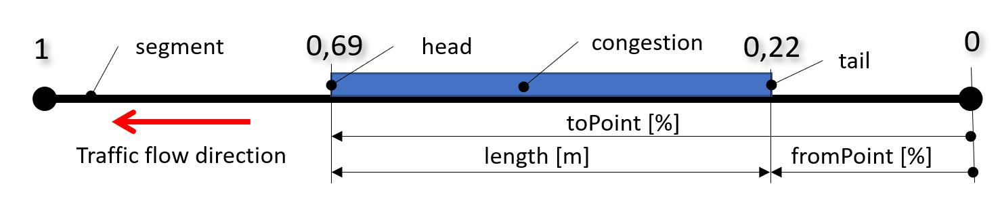

Concepts¶
The described format specify provision of floating car data (FCD) information. This includes travel times, traffic flow speeds, traffic levels and estimation of congestion lengths on a set of predefined locations.
Unlike the previous version of the format x-format:cz-ndic_d2-fcd-v1.0, it introduces distinction by vehicle type (all, car, lorry).
Publications of type ElaboratedDataPublication¶
The format is based on the DATEX II publication type ElaboratedDataPublication [16157-5] and uses it to describe information about travel times, speeds and traffic levels on a set of predefined locations, differentiated by vehicle type.
The information about traffic levels, length of queues with their start and end is added via the level B extension of the TrafficStatus class of the DATEX II model.
Information about data quality and number of FCD vehicles on the segment, including their type, is added via the level B extension of the TravelTimeData class of the DATEX II model.
1<?xml version="1.0" encoding="utf-8"?>
2<d2LogicalModel modelBaseVersion="2" xmlns="http://datex2.eu/schema/2/2_0" xmlns:xsi="http://www.w3.org/2001/XMLSchema-instance" xsi:schemaLocation="http://datex2.eu/schema/2/2_0 ../schema/schema.xsd">
3 <exchange>
4 <supplierIdentification>
5 <country>cz</country>
6 <nationalIdentifier>ŘSD</nationalIdentifier>
7 </supplierIdentification>
8 </exchange>
9 <payloadPublication lang="cs" xsi:type="ElaboratedDataPublication">
10 <feedType>x-format:cz-ndic_d2-fcd-v1.1</feedType>
11 <publicationTime>2022-12-18T00:00:06+01:00</publicationTime>
12 <publicationCreator>
13 <country>cz</country>
14 <nationalIdentifier>ŘSD</nationalIdentifier>
15 </publicationCreator>
16 <periodDefault>300</periodDefault>
17 <timeDefault>2022-12-17T23:59:35+01:00</timeDefault>
18 <headerInformation>
19 <confidentiality>noRestriction</confidentiality>
20 <informationStatus>real</informationStatus>
21 </headerInformation>
FCD information for a particular segment is listed in 3 elaboratedData elements, (they can only hold one type of information at one time):
traffic density in the TrafficStatus class + traffic levels (by CZ) and congestions in its extension,
traffic speed in class TrafficSpeed and
travel time in class TravelTimeData + quality parameters in its extension.
Note
In the case of segments where status information is calculated separately by vehicle type, the number of elaboratedData elements is tripled, i.e. a total of 9 elements (3x anyVehicle, 3x car and 3x lorry) per segment at one time.
The elaboratedData element does not have its own unique identifier and is uniquely determined by the publication time and the referenced location identifier.
The identification of the publication profile is given in the feedType element referring to the specific documentation published in the NAP (national access point).
Calculated FCD information¶
Status information is given for all vehicles together (anyVehicle) and separately (car, lorry) according to the type of location:
Segments with mixed traffic flow, where it does not make sense to evaluate traffic parameters separately by vehicle type, i.e. vehicles moves in a mixed traffic or in single lane traffic. For these segments only the elements with anyVehicle are present.
Segments with separate traffic flow where it makes sense to evaluate traffic parameters separately by vehicle type, i.e. vehicles move in separated traffic streams, in multiple lanes, so separated queues of vehicles by vehicle type may occur. For these segments, the all elements with anyVehicle are present and all elements with car and lorry are provided depending on whether the vehicles of the type were present on the segment at the time of evaluation.
The status information included in this profile is:
traffic flow speed [km/h] per
actual conditions
in free flow conditions (freeFlow)
travel times [s] per
actual conditions
in free flow conditions (freeFlow)
actual delay [s]
traffic density [-]
Other information included in this profile is:
system response times [s]
The status information included in this profile by extension of the TrafficStatus class is:
traffic levels [-] (1-5 as used in the Czech Republic)
queues on the segment, estimation of their length [m] and estimation of the start [%] and end [%] of the queue on the referenced segment
The common qualitative parameters included in this profile by extending the TravelTimeData class are:
data reliability level [-]
number of FCD vehicle probes on the segment [-]
Information included by the extension is shown in Figure 1.

TrafficStatus and TravelTimeData class extension.¶
The following articles are dedicated to the detailed description of the format.
Vehice category¶
Traffic parameters are calculated separately for passenger (car) and truck (lorry) and all vehicles (anyVehicle) in separate elaboratedData elements, identified by vehicleType value.
The TrafficStatus class element had to be extended by the vehicleType item in the type B extension.
39 <ndicFcdExtension>
40 <vehicleType>anyVehicle</vehicleType>
The TrafficSpeed class element uses forVehiclesWithCharacteristicsOf including vehicleType.
119 <forVehiclesWithCharacteristicsOf>
120 <vehicleType>anyVehicle</vehicleType>
121 </forVehiclesWithCharacteristicsOf>
The TravelTimeData class element directly contains the vehicleType element.
166 <vehicleType>anyVehicle</vehicleType>
167 <!-- travel time information -->
Data Reliability Measure¶
The Data Reliability Measure characterizes the quality of the data sample and has values <0-1> where 1 means 100% reliable data. The quality of the data sample is evaluated by the age and number of the input values. The calculation formula is not part of this profile.
The data reliability rate is given for each calculated value separately by the supplierCalculatedDataQuality attribute.
176 <freeFlowSpeed numberOfInputValuesUsed="9999" supplierCalculatedDataQuality="0.8">
Note
In this profile the extension for the Data Reliability Measure is not used.
Number of vehicle probes¶
The actual number of vehicles probes is given for each calculated value separately by its numberOfInputValuesUsed attribute.
34 <trafficStatus numberOfInputValuesUsed="9" supplierCalculatedDataQuality="1">
35 <trafficStatusValue>congested</trafficStatusValue>
36 </trafficStatus>
Some statistics, such as freeFlowSpeed or freeFlowTravelTime, are independent of the number of vehicle probes. In this case, the value of the number of vehicles, if specified by the numberOfInputValuesUsed attribute, is set to 9999.
172 <freeFlowTravelTime numberOfInputValuesUsed="9999" supplierCalculatedDataQuality="1">
173 <duration>259</duration>
174 </freeFlowTravelTime>
Traffic flow speed¶
The traffic flow speed [km/h] on the segment is given by two separate elaboratedData elements.
The actual average speed averageVehicleSpeed in the measured time interval is given in the TrafficSpeed class of the basicData element.
123 <averageVehicleSpeed numberOfInputValuesUsed="9" supplierCalculatedDataQuality="1">
124 <speed>38</speed>
125 </averageVehicleSpeed>
The freeFlowSpeed [km/h] on the segment is specified in the TravelTimeData class in the basicData element.
176 <freeFlowSpeed numberOfInputValuesUsed="9999" supplierCalculatedDataQuality="0.8">
177 <speed>50</speed>
178 </freeFlowSpeed>
Travel time and actual delay¶
The Travel Time [s] on the segment is given by one elaboratedData element.
Current average travel time travelTime.
168 <travelTime numberOfInputValuesUsed="9" supplierCalculatedDataQuality="1">
169 <duration>549</duration>
170 </travelTime>
Average free flow travel time freeFlowTravelTime.
172 <freeFlowTravelTime numberOfInputValuesUsed="9999" supplierCalculatedDataQuality="1">
173 <duration>259</duration>
174 </freeFlowTravelTime>
The actual delay is expressed implicitly as the difference between the values of the actual average travel time (travelTime) and the free flow travel time (freeFlowTravelTime).
Traffic levels¶
Traffic status (level of service) is expressed by TrafficStatusEnum enumeration as defined in standard [16157-3] in table A.125.
34 <trafficStatus numberOfInputValuesUsed="9" supplierCalculatedDataQuality="1">
35 <trafficStatusValue>congested</trafficStatusValue>
36 </trafficStatus>
Value |
Meaning |
Definition |
|---|---|---|
impossible |
Traffic collapse |
Vehicles on the roads are stationary or in convoys only moving very slowly, the average speed is very low. |
congested |
Traffic congestion |
Vehicle queues are formed, traffic is not flowing smoothly, average speed is significantly reduced, intersection passage is impaired. |
heavy |
Heavy traffic |
Streams of vehicles form, traffic is flowing, but speed is below the maximum speed limit. |
freeFlow |
Flowing traffic |
Traffic is flowing in that direction. Traffic is moving at or above the speed limit and drivers are free to change lanes. |
unknown |
Unknown |
Traffic conditions are unknown. |
The TrafficStatus class is extended (level B extension) to explicitly specify the traffic levels as defined and used in the Czech Republic. The traffic levels (1-5) are specified in the TrafficLevel class using the phrases “level1” to “level5”, in the trafficLevelValue element.
40 <vehicleType>anyVehicle</vehicleType>
41 <trafficLevel>
42 <trafficLevelValue>level4</trafficLevelValue>
43 </trafficLevel>
The TrafficLevel is calculated as the % difference between the current traffic flow speed and the traffic flow speed on the free segment.
Degree |
Description |
% of difference |
|---|---|---|
1 |
single vehicle operation only, driving is smooth |
<85 %, 100 %) |
2 |
small groups of vehicles, smooth running, passing intersections without problems |
<75 %, 85 %) |
3 |
vehicle streams are forming, traffic is smooth but speed is below the maximum speed limit |
<50 %, 75 %) |
4 |
vehicle queues are forming, traffic is not flowing, average speed is significantly reduced, passing the intersections is impaired |
<20 %, 50 %) |
5 |
traffic collapse - vehicles are stationary on the roads or moving very slowly in queues, average speed is very low |
<0 %, 20 %) |
Traffic queue¶
The queues on a segment are expressed by the presence of the queueInformation element, which was added to the TrafficStatus class via the DATEX II type B extension.
Segments are internally divided into smaller parts (sections of the Global Network, GN road network). The presence of congestion is evaluated with respect to GN sections as a decrease in the travelled speed of this section below 30 % of the free-flow speed.
The queueInformation element contains aggregated values from individual congested sections of the segment. If none of the sections of the segment were congested, the queueInformation element is not present. The element is present only once per segment, the values of its attributes are adapted to this (for more, see the description of the attributes and the image below).

Representation of the aggregation of individual congestions on a segment¶
44 <queueInformation>
45 <queue>
46 <queueLength>148</queueLength>
47 <!-- start of the queue (tail) at the 0.4 of the length of the segment -->
48 <fromPoint>0.4</fromPoint>
49 <!-- end of the queue (head) at the 0.9 of the length of the segment -->
50 <toPoint>0.9</toPoint>
51 </queue>
52 </queueInformation>
The length of a queue on a referenced segment is expressed in the queueLength element and is aggregated length of the traffic congestions for all sections of the segment [m]. i.e. the sum of the lengths of the congested Global Network sections (even non-contiguous) of the segment.
The start and end of the queue is given by the optional fromPoint and toPoint attributes, expressing relative distance from the beginning of the segment in the direction of traffic. A queue, according to this definition, starts (fromPoint) at the point where vehicles enter it and ends (toPoint) at the point where they leave it and continue on their route. See Figure 2.
In the case of multiple split congestions on a segment, for example, a congestion detected on GN sections 1 and 3, the fromPoint attribute only gives information about the 1st congestion and toPoint is calculated by using the queueLength value.

Example of referencing the relative position of a queue on a segment.¶
Providing only currently available data¶
In case of unavailability of input data on a given segment for the status information calculation, only free flow traffic parameters are transmitted, in the basicData element of the TravelTimeData class.
Thus, a segment for which actual status data exists is covered by 9 elaboratedData elements, while a segment for which no actual data exists is covered by 3 elements.
Note
9 elaboratedData elements for one segment is a maximum number. The number could be lower (6) if for example only cars or only lorries are present on the segment.
Temporal validity¶
The publication is periodically updated, the value in the periodDefault element specifies the duration of the update interval in seconds.
The value of publicationTime specifies when the publication was created, but not the reference time of the calculation.
The timeDefault value specifies the common reference calculation time for all record values and is the end time of a particular measurement and calculation period.
No other determination of data validity is used.
11 <publicationTime>2022-12-18T00:00:06+01:00</publicationTime>
12 <publicationCreator>
13 <country>cz</country>
14 <nationalIdentifier>ŘSD</nationalIdentifier>
15 </publicationCreator>
16 <periodDefault>300</periodDefault>
17 <timeDefault>2022-12-17T23:59:35+01:00</timeDefault>
FCD input data age¶
Each traffic parameter indicates the time of the most recent input information used for its calculation in the measurementOrCalculationTime element.
Note
The input data for the calculation of traffic parameters are the positions of the vehicle probes. These data are evaluated at regular time intervals, recalculated into sections travelled (parts of the segment) and values for such sections travelled. The last update of the segment status occurs when the last vehicle leaves the segment.
The age of the input data used for each record can be calculated as the difference between the timeDefault of the entire publication and the measurementOrCalculationTime value of that record. The age of the input data can be used to determine system response time.
In case of insufficient underlying data for the calculation of the statuses (according to the calculation algorithm), elements containing information on actual speed, traffic statuses and travel times are omitted.
16 <periodDefault>300</periodDefault>
17 <timeDefault>2022-12-17T23:59:35+01:00</timeDefault>
18 <headerInformation>
19 <confidentiality>noRestriction</confidentiality>
20 <informationStatus>real</informationStatus>
21 </headerInformation>
22 <!-- information for one segment -->
23 <!-- traffic status element - ALL vehicles -->
24 <elaboratedData>
25 <source>
26 <sourceIdentification>ndic-secid-1-01</sourceIdentification>
27 </source>
28 <basicData xsi:type="TrafficStatus">
29 <measurementOrCalculationTime>2022-12-17T23:57:35+01:00</measurementOrCalculationTime>
Location Description¶
FCD data are measured at predefined road segments. The segment can be given by 2 consecutive ALERT-C location points, sections of the road network used (GlobalNetwork), or requirements based on the physical layout of the road.
The location of FCD segment is expressed by a reference in a pertinentLocation element to a set of predefined locations in a PredefinedLocationsPublication [16157-3] associated with this information source.
30 <pertinentLocation xsi:type="LocationByReference">
31 <predefinedLocationReference id="6D476A44-AA44-4947-AA4B-7C4DD79BB67E" targetClass="PredefinedLocation" version="0"/>
32 </pertinentLocation>
In addition to describing the location with the PredefinedLocation element, the format optionally allows the location to be described with an additional reference, the provider’s internal identifier, in the source element.
25 <source>
26 <sourceIdentification>ndic-secid-1-01</sourceIdentification>
27 </source>
Location description methods are beyond the scope of this document and are described elsewhere.